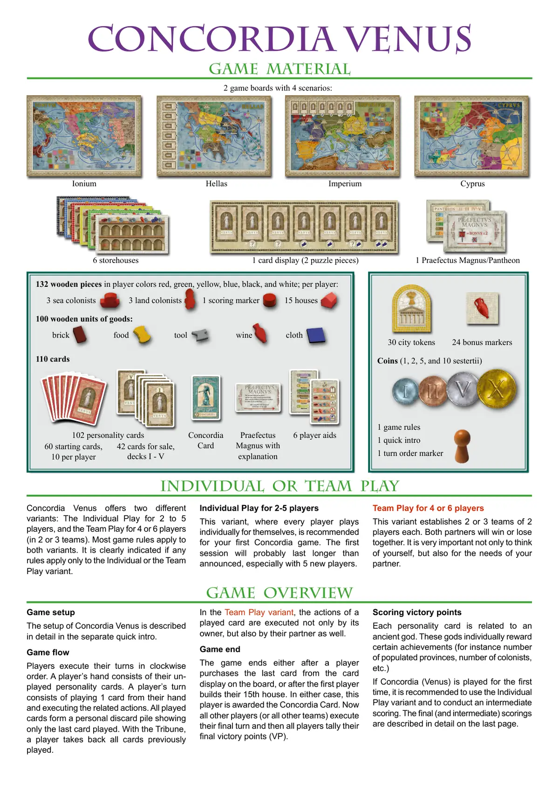
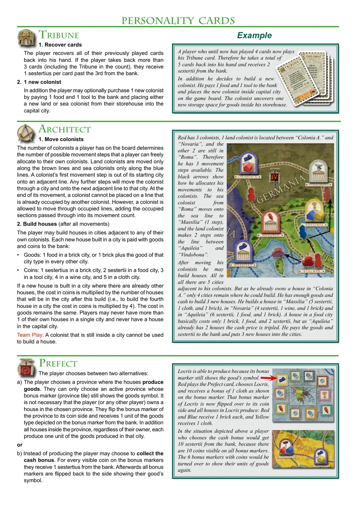
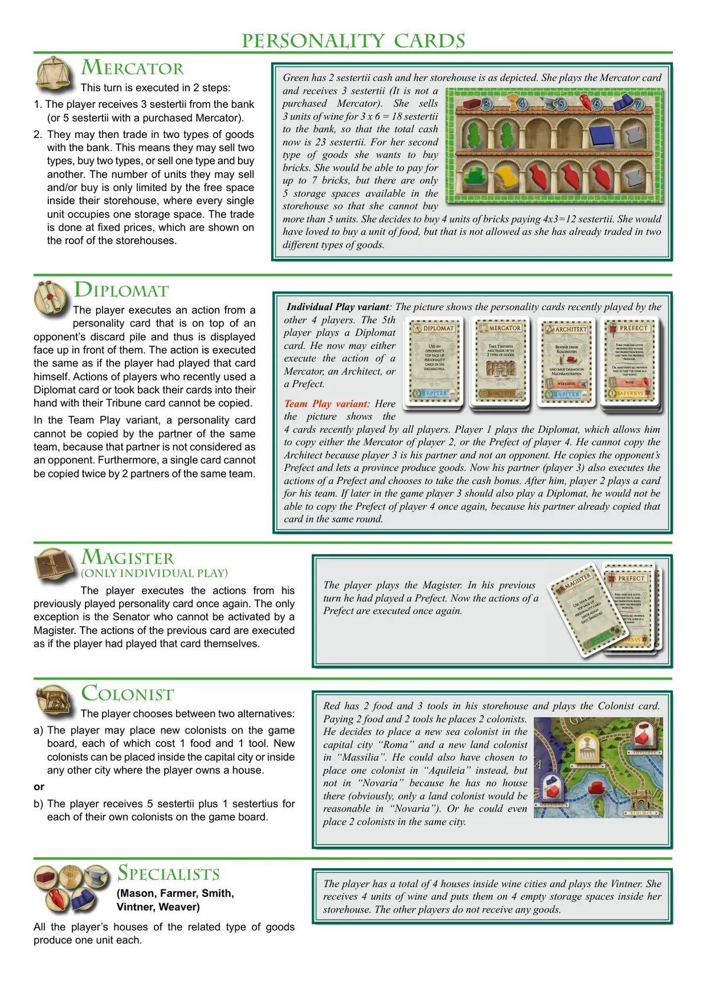
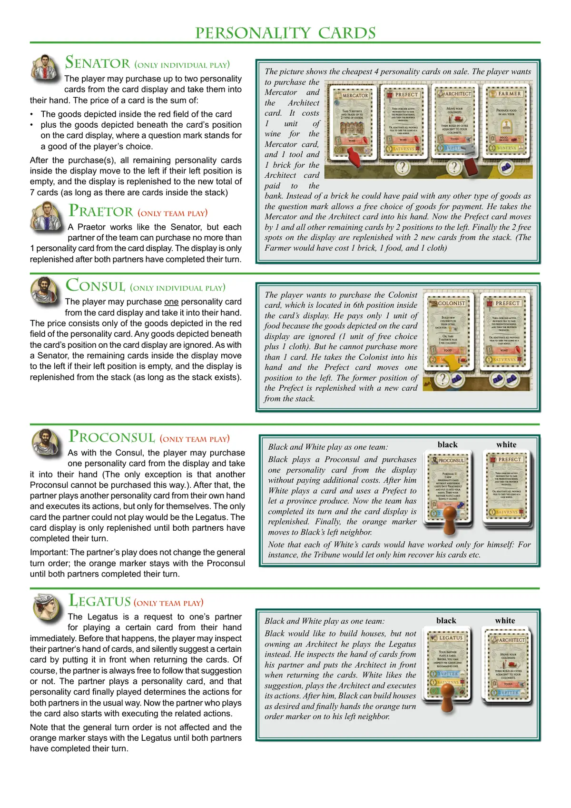
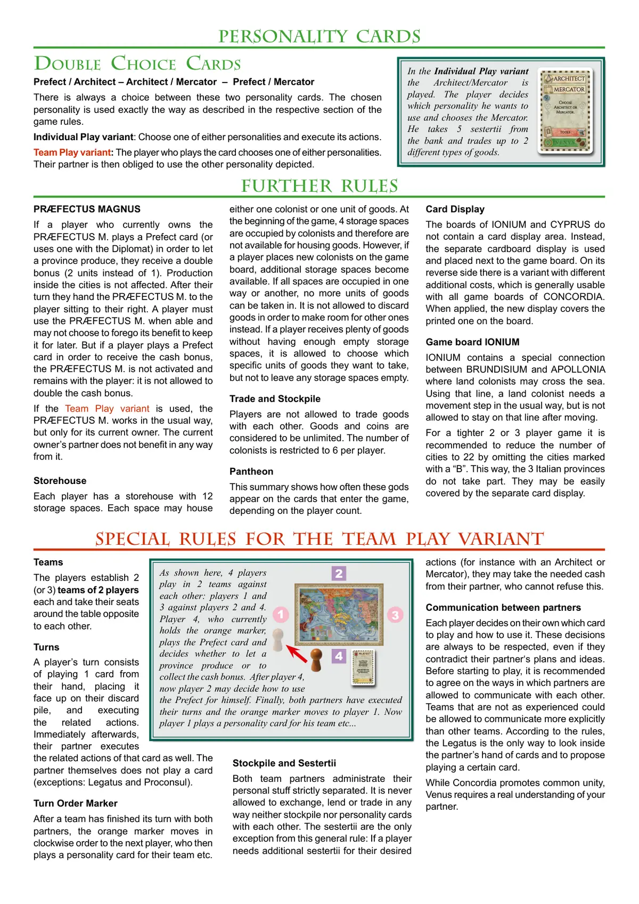
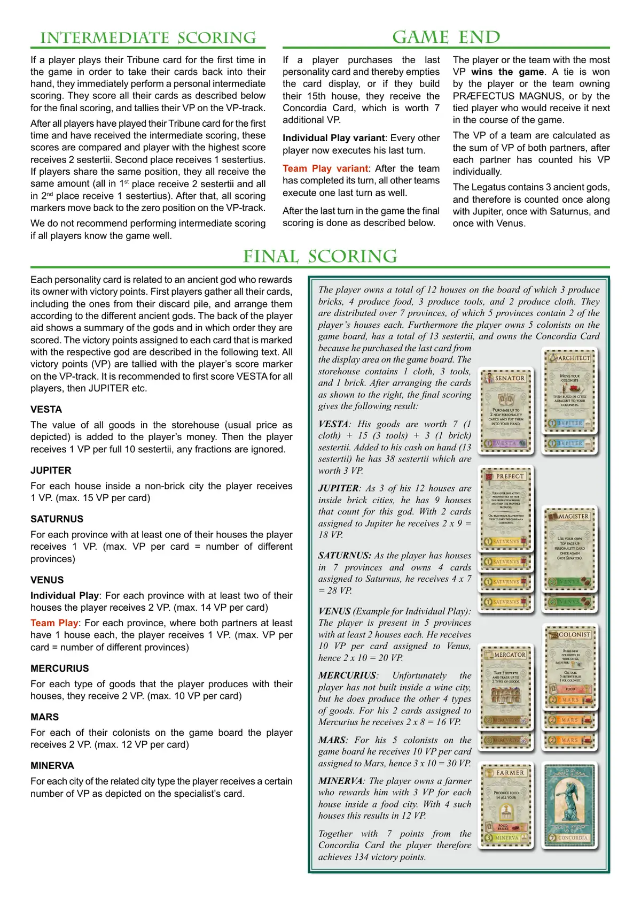

🕊️ 康考迪亚：维纳斯
Concordia Venus · 设计：Mac Gerdts · PD-Verlag / 英文版 Rio Grande Games 出版 · 2–6 人 · 官方英文规则书全文翻译（6 页 · AI 辅助机翻）
本页收录《康考迪亚：维纳斯》（Concordia Venus, 2018）的原版官方规则书全部 6 页（底本：PD-Verlag (PD-Games) 官方，Regel_Venus_engl_1_01.pdf），逐页随图排列，点击任意图片即可放大查看；每页下方默认折叠了该页的 AI 辅助中文机翻对照，需要时可展开。规则内容归 PD-Verlag / 英文版 Rio Grande Games 及版权方所有，收录仅供个人学习查阅。
整理说明：机翻对照按本站术语口径对齐（牌库/手牌/回合/轮/板块/指示物等），PDF 图文混排页的语序可能与原书视觉顺序略有出入；规则细节请一律以页面上方原书页面为准。

📝 第 1 页 AI 机翻对照（点击展开）
游戏材料
和谐女神维纳斯 (Concordia Venus)
游戏设置
和谐女神维纳斯的设置在单独的快速入门指南中有详细描述。
游戏流程
玩家按顺时针顺序执行他们的回合。玩家的手牌由他们未打出的人格牌组成。玩家的回合包括从手牌中打出1张牌并执行相关行动。所有打出的牌形成一个个人弃牌堆，只显示最后打出的那张牌。通过使用护民官(Tribune)，玩家可以收回之前打出的所有牌。
在团队游戏变体中，打出的牌的行动不仅由其所有者执行，也由其搭档执行。
游戏结束
游戏在以下任一情况结束时：有玩家从版图上的牌展示区购买最后一张牌，或第一名玩家建造了第15座房子。无论哪种情况，该玩家将获得和谐女神牌(Concordia Card)。现在所有其他玩家（或所有其他团队）执行他们的最终回合，然后所有玩家计算他们的最终胜利点(VP)。
游戏概览
计分
每个人格牌都与一位古代神祇相关。这些神祇会分别奖励特定的成就（例如已定居省份的数量、殖民者的数量等）
如果是第一次玩和谐女神维纳斯(Concordia Venus)，建议使用单人游戏变体并进行中期计分。最终（和中期）计分在最后一页有详细描述。
单人或团队游戏
和谐女神维纳斯提供两种不同的变体：2-5名玩家的单人游戏，以及4人或6名玩家的团队游戏（2或3个团队）。大多数游戏规则同时适用于这两种变体。如果有任何规则仅适用于单人或团队游戏变体，会明确标示。
2-5名玩家的单人游戏
这个变体中，每位玩家独立为自己游戏，推荐作为你第一次玩和谐女神游戏的变体。第一局游戏可能会比宣布的时间更长，特别是有5名新玩家时。
4人或6名玩家的团队游戏
这个变体建立了2个或3个由2名玩家组成的团队。两位搭档将一起赢或一起输。不仅为自己考虑，还要考虑搭档的需求，这一点非常重要。
6个仓库
1个牌展示区（2个拼图块）
1位大总督/万神殿(Praefectus Magnus/Pantheon)
2个游戏版图，包含4个场景：
30个城市指示物
24个奖励标记
硬币（1、2、5和10塞斯特斯(1, 2, 5, and 10 sestertii)）
1份游戏规则
1份快速入门指南
1个回合顺序标记
132个玩家颜色的木制棋子：红色、绿色、黄色、蓝色、黑色和白色；每位玩家：
3个海上殖民者
3个陆地殖民者
1个计分标记
15座房子
100个货物木制单位：
砖块
食物
工具
葡萄酒
布料
110张牌
PM（大总督）从最后一位玩家开始，并让他在使用总督(Prefect)让省份生产时获得双倍省份奖励（对城市生产无效果）。
使用此卡牌后，它会被逆时针传递给右边的玩家。
102张人格卡牌
Concordia (和谐)
卡牌
Praefectus Magnus (大总督) 带说明
6张玩家辅助卡
60张起始卡牌，每位玩家10张
42张待售卡牌，牌库I-V
10个塞斯特提乌斯(Sestertii)
城市（无砖块-城市）
行省(Provincia)
行省内有2栋房屋(House)
生产(Production)
殖民者(Colonist)
专家(Specialist)
Ionium
Hellas
Imperium
Cyprus

📝 第 2 页 AI 机翻对照（点击展开）
建筑师
1. 移动殖民者
玩家在版图上的殖民者数量决定了玩家可以自由分配给自己的殖民者的可能移动步数。陆地殖民者只能沿着棕色线路移动，海洋殖民者只能沿着蓝色线路移动。殖民者的第一步是从起始城市移动到相邻的线路上。任何后续步骤将使殖民者穿过一个城市并移动到该城市的下一个相邻线路上。在移动结束时，殖民者不能被放置在已被另一个殖民者占据的线路上。然而，殖民者被允许穿过被占据的线路，将被经过的被占据部分计入其移动计数中。
- 建造房屋（在所有移动之后）
玩家可以在任何与其自身殖民者相邻的城市建造房屋。在城市中建造的每座新房屋都需要向银行支付货物和硬币：
• 货物：在砖石城市中支付1个食物，或在其他所有城市中支付1个砖石加上该城市类型的货物。
• 硬币：在砖石城市中支付1个塞斯特斯，在食物城市中支付2个塞斯特斯，在工具城市中支付3个，在葡萄酒城市中支付4个，在布料城市中支付5个。
如果在已有其他房屋的城市中建造新房屋，硬币成本将乘以建造后该城市中的房屋数量（即，在城市中建造第四座房屋时，硬币成本乘以4）。货物成本保持不变。玩家在任何单个城市中拥有的房屋不能超过1座，且永远不能在首都城市中拥有房屋。
团队游戏：仍然在城市内的殖民者不能用于建造房屋。
长官
玩家在两种选择之间进行选择：
a) 玩家选择一个房屋生产货物的省份。他们只能选择一个仍然显示货物符号的奖励标记（省份板块）的活跃省份。玩家（或任何其他玩家）在选择省份中拥有房屋并非必要。他们将省份的奖励标记翻转到硬币面，并从银行获得奖励标记上显示的货物类型的1个单位。此外，省份内的所有房屋，无论其所有者是谁，各自生产该城市生产的一种货物单位的货物。
或者
b) 玩家可以选择收集现金奖励而不是生产货物。对于奖励标记上每个可见的硬币，他们从银行获得1个塞斯特斯。之后，所有奖励标记都被翻回显示其货物符号的一面。
红色有3个殖民者，1个陆地殖民者位于"Colonia A."和"Novaria"之间，另外2个仍在"Roma"中。因此他有3个可用的移动步数。黑色箭头显示了他如何分配其殖民者的移动。来自"Roma"的海洋殖民者移动到通往"Massilia"的海上线路（1步），
and the land colonist
makes 2 steps onto
the
line
between
"Aquileia"
and
"Vindobona".
After
moving
his
colonists
he
may
build houses. All in
all there are 5 cities
adjacent to his colonists. But as he already owns a house in "Colonia
A." only 4 cities remain where he could build. He has enough goods and
cash to build 3 new houses. He builds a house in "Massilia" (5 sestertii,
1 cloth, and 1 brick), in "Novaria" (4 sestertii, 1 wine, and 1 brick) and
in "Aquileia" (6 sestertii, 1 food, and 1 brick). A house in a food city
basically costs only 1 brick, 1 food, and 2 sestertii, but as "Aquileia"
already has 2 houses the cash price is tripled. He pays the goods and
sestertii to the bank and puts 3 new houses into the cities.
性格卡
护民官
示例
1. 收回卡牌
玩家将他们之前打出的所有卡牌收回手中。如果玩家收回超过3张卡牌（包括护民官卡牌），他们将从银行获得每张超过3的卡牌1塞斯特提乌斯。
- 1个新殖民者
此外，玩家可以选择性地通过向银行支付1食物和1工具来购买1个新殖民者，并将他们的仓库中的一个新的陆地或海上殖民者放置到首都城市。
Locris能够生产，因为它的奖励标记仍然显示着该货物的符号。
红色玩家打出长官卡，选择Locris，并获得奖励标记上显示的1布料奖励。Locris的那个奖励标记现在被翻转到硬币面，Locris的所有房屋都进行生产：红色和蓝色玩家各获得1砖块，黄色玩家获得1布料。
在上 depicted 的情况下，选择现金奖励的玩家将从银行获得10塞斯特提乌斯，因为所有奖励标记上可见的硬币总数为10。那6个显示硬币的奖励标记将被翻转回显示货物单位的一面。
到目前为止已经打出4张卡牌的玩家现在打出他的护民官卡。因此他总共将5张卡牌收回手中，并从银行获得2塞斯特提乌斯。
此外，他决定建造一个新殖民者。他向银行支付1食物和1工具，并将新殖民者放置在游戏版图上的首都城市内。这个殖民者在仓库内为货物揭开了一个新的存储空间。
元老院
购买最多
2张人物卡
（到手牌）。
商人
拿取3塞斯特提乌斯
并交易
最多
2种货物。
长官
让1个省份
生产
并获得该
省份奖励。
或者激活所有
省份并获得
现金奖励。
使用对手
弃牌堆中
顶面朝上的
人物卡。
外交官
护民官
收回你所有的
人物卡
并且每张收回的
超过3的卡牌获得1塞斯特提乌斯。
包括在计数中的
护民官。
此外你可以在
首都建造1个
首都城市：

📝 第 3 页 AI 机翻对照（点击展开）
性格卡
商人（Mercator）
本回合分2个步骤执行：
- 玩家从银行获得3塞斯特斯（如果是购买的商人则获得5塞斯特斯）。
2. 然后他们可以与银行交易两种类型的商品。这意味着他们可以出售两种类型、购买两种类型，或者出售一种类型并购买另一种类型。他们可以出售和/或购买的数量仅受其仓库内可用空间的限制，每个单位占用一个存储空间。交易以固定价格进行，这些价格显示在仓库的屋顶上。
外交官（Diplomat）
玩家执行一张位于对手弃牌堆顶部的性格卡上的行动，因此该卡牌正面向前展示。该行动的执行方式与玩家自己打出该卡牌时相同。最近使用外交官卡或通过他们的护民官卡将卡牌收回手牌的玩家的行动不能被复制。在团队游戏变体中，同一团队的伙伴不能复制性格卡，因为该伙伴不被视为对手。此外，同一团队的两位伙伴不能复制同一张卡牌两次。
教师（Magister）
（仅限单人游戏）
玩家再次执行其先前打出的性格卡上的行动。唯一的例外是参议员，不能通过教师激活。前一张卡牌的行动执行方式与玩家自己打出该卡牌时相同。
殖民者（Colonist）
玩家在两种选择之间选择：
a) 玩家可以在游戏版图上放置新的殖民者，每个殖民者花费1食物和1工具。新的殖民者可以放置在首都城市内，或者放置在玩家拥有房屋的任何其他城市内。
或者
b) 玩家获得5塞斯特斯，加上其在游戏版图上的每个自有殖民者各1塞斯特斯。
专家（石匠、农民、铁匠、葡萄种植者、织布匠）
玩家所有相关类型商品的房屋各生产一个单位。
格林有2塞斯特斯现金，她的仓库如图所示。她打出商人卡并获得3塞斯特斯（这不是购买的商人）。她向银行出售3单位葡萄酒，获得3×6=18塞斯特斯，因此总现金现在是23塞斯特斯。对于她的第二种商品，她想购买砖块。她最多可以支付7块砖的费用，但仓库中只有5个存储空间可用，因此她最多只能购买5单位。她决定购买4单位砖块，支付4×3=12塞斯特斯。她本想购买一单位食物，但这是不允许的，因为她已经交易了两种不同类型的商品。
玩家共有4座葡萄酒城市内的房屋，并打出葡萄种植者卡。她获得4单位葡萄酒，并将它们放在她仓库内的4个空存储空间上。
仓库。其他玩家不会收到任何货物。
单人游戏变体：图片显示了其他4位玩家最近打出的人格牌。第5位玩家打出外交官牌。他现在可以执行商人、建筑师或行省总督的行动。
团队游戏变体：这里图片显示了所有玩家最近打出的4张牌。玩家1打出外交官，这使他可以复制玩家2的商人，或玩家4的行省总督。他不能复制建筑师，因为玩家3是他的队友而不是对手。他复制了对手的行省总督，并让一个行省生产货物。现在他的队友（玩家3）也执行行省总督的行动，并选择领取现金奖励。在他之后，玩家2为他的团队打出一张牌。如果在游戏后期玩家3也打出外交官，他将无法再次复制玩家4的行省总督，因为他的队友在同一轮中已经复制了那张牌。
工具
建筑师
移动你的殖民者
然后在邻近城市建造。
使用其他玩家
最近打出的人格牌。
外交官
使用对手
在其弃牌堆中
正面朝上的
人格牌。
行省总督
让1个行省
生产货物
并领取行省奖励。
或激活所有
行省并领取
现金奖励。
行省总督
让1个行省
生产货物
并领取行省奖励。
或激活所有
行省并领取
现金奖励。
行省总督
让1个行省
生产货物
并领取行省奖励。
或激活所有
行省并领取
现金奖励。
行省总督
让1个行省
生产货物
并领取行省奖励。
或激活所有
行省并领取
现金奖励。
葡萄酒
行省总督
翻转一张激活的
行省板块以领取生产奖励，
然后该行省生产。
或者，重新激活所有行省
板块以领取金币作为现金奖励。
参议员
购买最多2张
人格牌（到手牌）。
商人
领取3塞斯特斯
并交易最多2种类型的货物。
玩家打出大师牌。在他的上一个回合中，他打出了一张行省总督牌。现在再次执行行省总督的行动。
参议员
购买最多
2张人格牌
（到手牌）。
商人
领取3塞斯特斯
并交易
最多2种
货物类型。
行省总督
让1个行省
生产货物
并领取行省奖励。
或者激活所有
行省并领取
现金奖励。
行省总督
翻转一张激活的
行省板块以领取生产奖励，
然后该行省生产。
或者，重新激活所有行省
板块以领取金币作为现金奖励。
大师
再次使用
你自己正面朝上的人格牌
（参议员除外）。
红色玩家在他的仓库中有2个食物和3个工具，并打出殖民者牌。他支付2个食物和2个工具，放置了2个殖民者。
他决定在首都"Roma"（罗马）放置一个新的海上殖民者，在"Massilia"（马赛）放置一个新的陆地殖民者。他也可以选择在"Aquileia"（阿奎莱亚）放置一个殖民者，但不能在"Novaria"（诺瓦里亚）放置，因为他在那里没有房子（显然，在"Novaria"放置一个陆地殖民者是合理的）。或者他甚至可以在同一个城市放置2个殖民者。

📝 第 4 页 AI 机翻对照（点击展开）
人物卡
元老（仅限单人游戏）
玩家可以从卡牌展示区购买最多两张人物卡并将其收入手牌。一张卡的价格是以下两项的总和：
• 卡牌红色方框内 depicted 的货物
• 加上卡牌在展示区位置下方 depicted 的货物，问号代表玩家选择的任意一种货物。
购买后，如果展示区内剩余的人物卡左侧位置为空，所有剩余的人物卡会向左移动，展示区会补充至新的总数7张（只要牌堆中还有卡牌）。
执政官（仅限团队游戏）
执政官的工作方式与元老相同，但团队的每位伙伴最多可以从卡牌展示区购买1张人物卡。展示区只在两位伙伴都完成他们的回合后才补充。
领事（仅限单人游戏）
玩家可以从卡牌展示区购买一张人物卡并将其收入手牌。价格仅由人物卡红色方框内 depicted 的货物组成。卡牌在展示区位置下方 depicted 的任何货物都被忽略。与元老相同，如果展示区内剩余卡牌的左侧位置为空，它们会向左移动，展示区会从牌堆中补充（只要牌堆还存在）。
总督（仅限团队游戏）
与领事相同，玩家可以从展示区购买一张人物卡并将其收入手牌（唯一的例外是这种方式不能购买另一位总督）。之后，伙伴从自己手牌中打出另一张人物卡并执行其行动，但仅为自己执行。伙伴唯一不能打出的卡牌是军团长。卡牌展示区只在两位伙伴都完成他们的回合后才补充。
重要：伙伴的出牌不会改变总的回合顺序；橙色标记会留在总督处，直到两位伙伴都完成他们的回合。
军团长（仅限团队游戏）
军团长是请求伙伴立即从他们手牌中打出特定卡牌的请求。在此之前，玩家可以检查伙伴的手牌，并在返还卡牌时通过将特定卡牌放在前面来默默地建议某张卡牌。当然，伙伴总是可以自由选择是否遵循该建议。伙伴打出一张人物卡，这张最终打出的人物卡以通常方式为两位伙伴确定行动。现在，打出卡牌的伙伴也开始执行相关行动。
请注意，总的回合顺序不受影响，橙色标记会留在军团长处，直到两位伙伴都完成他们的回合。
图片展示了正在出售的最便宜的4张人物卡。玩家想要购买
商人
和
建筑师
卡牌。商人卡牌需要
支付
1 单位
的酒，
建筑师卡牌需要
支付 1 工具和
1 砖块，
这些都支付给
银行。他本可以用任何其他类型的商品代替砖块支付，因为问号允许在支付时自由选择商品。他将商人和建筑师卡牌收入手牌。现在总督卡牌向左移动 1 个位置，其他所有剩余卡牌向左移动 2 个位置。最后，展示区上的 2 个空位从牌堆中补充 2 张新卡牌。（农夫卡牌本需要 1 砖块、1 食物和 1 布料）
黑方和白方作为一个团队游戏：
黑方打出一位总督，并从展示区购买
一张人物卡牌而不支付额外费用。之后
白方打出一张卡牌，并使用一位总督让一个省份生产。现在该团队完成了它的回合，卡牌展示区得到补充。最后，橙色标记移动到黑方左侧邻居的回合。
请注意，白方的每张卡牌都只能对自己有效：例如，护民官只会让他自己回收卡牌等等。
玩家想要购买位于卡牌展示区第 6 位置的殖民者卡牌。他只支付了 1 单位食物，因为展示区上显示的商品被忽略（1 单位自由选择商品加 1 布料）。但他不能购买超过 1 张卡牌。他将殖民者卡牌收入手牌，总督卡牌向左移动一个位置。总督原来的位置从牌堆中补充一张新卡牌。
殖民者
食物
在你的城市中
建造新的
殖民者，
每个：
或者，获得
5 塞斯特尔提乌斯（sestertii）加上
每个殖民者 1 个。
酒
总督
翻转一个活跃的
省份板块以获得生产奖励，
然后该省份生产。
或者，重新激活所有
省份板块以获得金币作为
现金奖励。
黑方和白方作为一个团队游戏：
黑方想要建造房屋，但由于没有建筑师，他转而打出军团长。他检查了伙伴的手牌，并在归还卡牌时将建筑师放在前面。白方喜欢这个建议，打出建筑师并执行其行动。之后，黑方可以按意愿建造房屋，最后将橙色回合顺序标记交给他的左侧邻居。
pR ÆFEKt
lass 1 proviNz
produziereN
uNd Nimm deN
proviNzBoNus.
oder aktiviere alle
proviNzeN uNd Nimm
deN geldBoNus.
pR ÆFEKt
lass 1 proviNz
produziereN
uNd Nimm deN
proviNzBoNus.
oder aktiviere alle
proviNzeN uNd Nimm
deN geldBoNus.
pR ÆFEKt
lass 1 proviNz
produziereN
uNd Nimm deN
proviNzBoNus.
oder aktiviere alle
proviNzeN uNd Nimm
deN geldBoNus.
pR ÆFEKt
lass 1 proviNz
produziereN
uNd Nimm deN
proviNzBoNus.
oder aktiviere alle
proviNzeN uNd Nimm
deN geldBoNus.
总督
翻转一个活跃的
省份板块以获得生产奖励，
然后，省份
生产。
或者，重新激活所有省份
板块以获得金币作为
现金奖励。
参议员
购买最多2张人物牌
（到手牌）。
葡萄酒
商人
拿取5塞斯特斯
并交易最多
2种商品。
织物
购买
1张新
人物牌
无额外
费用（不包括总督）
并将其放入你的
手牌。然后你的
伙伴打出1张牌
（单独使用）。
总督
黑色
白色
总督
让1个省份
生产
并拿取省份
奖励。
或者激活所有
省份并拿取
金币奖励。
总督
让1个省份
生产
并拿取省份
奖励。
或者激活所有
省份并拿取
金币奖励。
总督
让1个省份
生产
并拿取省份
奖励。
或者激活所有
省份并拿取
金币奖励。
总督
让1个省份
生产
并拿取省份
奖励。
或者激活所有
省份并拿取
金币奖励。
总督
让1个省份
生产
并拿取省份
奖励。
或者激活所有
省份并拿取
金币奖励。
参议员
购买最多2张人物牌
（到手牌）。
葡萄酒
商人
拿取5塞斯特斯
并交易最多
2种商品。
织物
购买
1张人物牌，
除了总督，
无额外费用
（到手牌）。
之后你的
伙伴打出他
的一张牌并单独
使用它。
总督
黑色
白色
使节
你的伙伴
打出一张牌。
在此之前，你可以
查看他的牌并
推荐一张。
工具
移动你的
殖民者
然后在你的
殖民者相邻的城市
建造。
建筑师
葡萄酒
商人
拿取5塞斯特斯
并交易最多
2种商品。
葡萄酒
地方官
翻转一张激活的
省份板块以获得
生产奖励，
然后，该省份
生产。
或者，重新激活所有省份
板块以获得金币作为
现金奖励。
食物
砖块
在你的所有
农场生产食物
工具
移动你的
殖民者
然后在你的
殖民者相邻的城市
建造。
建筑师

📝 第 5 页 AI 机翻对照（点击展开）
其他规则
大总督
如果当前拥有大总督的玩家打出总督卡（或使用外交官能力）以让省份生产，他们将获得双倍奖励（2个单位而非1个）。城市内部的生产不受影响。在其回合结束后，他们将大总督交给坐在他们右侧的玩家。玩家必须在能够时使用大总督，不得选择放弃其好处以保留到后面。但如果玩家打出总督卡是为了获得现金奖励，则大总督不会被激活，而是保留在玩家手中：不允许将现金奖励翻倍。
如果使用团队合作变体，大总督按常规方式工作，但仅对其当前所有者有效。当前所有者的搭档不会从中获得任何好处。
仓库
每位玩家有一个有12个存储空间的仓库。每个空间可以容纳一个殖民者或一个单位的货物。游戏开始时，4个存储空间被殖民者占据，因此无法用于存放货物。然而，如果玩家在游戏版图上放置新的殖民者，额外的存储空间将变得可用。如果所有空间以某种方式被占据，则不能再接收货物。不允许为了腾出空间给其他货物而丢弃货物。如果玩家收到大量货物但没有足够的空存储空间，可以选择接收哪些特定的货物单位，但不能留下任何存储空间空着。
贸易与囤货
玩家之间不允许交易货物。货物和硬币被视为无限量。殖民者的数量限制为每位玩家6个。
万神殿
此摘要显示了这些神祇在进入游戏的卡牌上出现的频率，这取决于玩家数量。
卡牌展示
IONIUM和CYPRUS的版图不包含卡牌展示区域。而是使用单独的纸板展示，放置在游戏版图旁边。其背面有一个带有不同额外成本的变体，通常可用于CONCORDIA的所有版图。应用时，新的展示会覆盖版图上印刷的展示。
游戏版图IONIUM
IONIUM包含BRUNDISIUM和APOLLONIA之间的特殊连接，陆地殖民者可以穿越海洋。使用这条线时，陆地殖民者需要按常规方式移动一步，但移动后不允许停留在这条线上。
为了更紧凑的2人或3人游戏，建议通过省略标记有"B"的城市将城市数量减少到22个。这样，3个意大利省份将不参与游戏。它们可以很容易地被单独的卡牌展示覆盖。
团队合作变体的特殊规则
队伍
玩家组成2
(或3)个2人团队，各自在桌子对面就座。
回合
玩家的回合包括从手牌中打出1张牌，将其正面朝上放在自己的弃牌堆上，并执行相关行动。之后，其搭档也立即执行该牌的相关行动。搭档自己不打出牌（例外：Legatus和Proconsul）。
回合顺序标记
当一个团队的两名搭档都完成回合后，橙色标记按顺时针方向移动到下一位玩家，然后该玩家为团队打出一张人物卡等。
库存和塞斯特尔提乌姆
两名团队搭档严格分开管理各自的物品。在任何情况下都不允许交换、借出或交易库存或人物卡。塞斯特尔提乌姆是这条通用规则的唯一例外：如果玩家需要额外的塞斯特尔提乌姆来执行其想要的行动（例如使用Architect或Mercator），他们可以从搭档那里取走所需的现金，搭档不得拒绝。
搭档间的沟通
每位玩家自行决定打出哪张牌以及如何使用它。这些决定应始终得到尊重，即使它们与搭档的计划和想法相矛盾。在开始游戏前，建议就搭档间允许的沟通方式达成一致。经验不足的团队可能比其他团队被允许进行更明确的沟通。根据规则，Legatus是查看搭档手牌并提议打出特定牌的唯一方式。
虽然Concordia促进共同团结，但Venus需要真正理解你的搭档。
人物卡
双重选择卡
Prefect / Architect – Architect / Mercator – Prefect / Mercator
在这两个人物卡之间总是有一个选择。所选人物卡按照游戏规则相应部分描述的方式使用。
单人游戏变体：选择两个人物卡中的一个并执行其行动。
团队游戏变体：打出该牌的玩家选择两个人物卡中的一个。其搭档则必须使用描绘的另一个人物卡。
在单人游戏变体中，打出Architect/Mercator。玩家决定使用哪个人物卡并选择Mercator。他从银行取走5塞斯特尔提乌姆并交易最多2种不同类型的商品。
工具
ARCHITECT
选择Architect或Mercator。
MERCATOR
如图所示，4名玩家分成2队对抗：玩家1和3对抗玩家2和4。当前持有橙色标记的玩家4打出Prefect卡，并决定是让一个省份生产还是收取现金奖励。在玩家4之后，
现在玩家2可以决定如何为他自己使用总督。最后，两位合作伙伴都执行了他们的回合，橙色指示物移动到玩家1处。现在玩家1为他的团队打出一张人物卡等等...
pR ÆFEKt
lass 1 proviNz
produziereN
uNd Nimm deN
proviNzBoNus.
oder aktiviere alle
proviNzeN uNd Nimm
deN geldBoNus.

📝 第 6 页 AI 机翻对照（点击展开）
每张人格卡都与一位古代神祇相关联，该神祇会为其所有者奖励胜利点。首先，玩家收集他们所有的卡牌，包括弃牌堆中的卡牌，并根据不同的古代神祇进行排列。玩家辅助工具的背面显示了神祇的摘要以及它们的计分顺序。标记有相应神祇的每张卡牌所分配的胜利点数在以下文本中描述。所有胜利点(VP)都使用玩家在VP轨道上的记分标记进行计算。建议先为所有玩家计分VESTA，然后是JUPITER等。
VESTA
仓库中所有商品的价值（通常价格如图所示）将加入玩家的金钱。然后，玩家每满10塞斯特斯获得1 VP，任何小数部分将被忽略。
JUPITER
对于玩家在每个非砖石城市内的每座房屋，玩家获得1 VP。（每张卡最多15 VP）
SATURNUS
对于每个至少有一座玩家房屋的省份，玩家获得1 VP。（每张卡最大VP数=不同省份的数量）
VENUS
单人游戏：对于每个至少有两座玩家房屋的省份，玩家获得2 VP。（每张卡最多14 VP）
团队游戏：对于每个两位伙伴至少各有一座房屋的省份，玩家获得1 VP。（每张卡最大VP数=不同省份的数量）
MERCURIUS
对于玩家通过其房屋生产的每种类型的商品，玩家获得2 VP。（每张卡最多10 VP）
MARS
对于玩家在游戏版图上的每个殖民者，玩家获得2 VP。（每张卡最多12 VP）
MINERVA
对于每个相关城市类型的城市，玩家根据专家卡上所示获得一定数量的VP。
最终计分
玩家在版图上总共拥有12座房屋，其中3座生产砖块，4座生产食物，3座生产工具，2座生产布料。它们分布在7个省份中，其中5个省份各有2座玩家的房屋。此外，玩家在游戏版图上拥有5个殖民者，总共拥有13塞斯特斯，并拥有和谐卡，因为他购买了游戏版图展示区最后一张卡。仓库包含1块布料、3件工具和1块砖。如图所示排列卡牌后，最终计分结果如下：
VESTA：他的商品价值为7（1布料）+15（3工具）+3（1砖块）塞斯特斯。加上他手头的现金（13塞斯特斯），他共有38塞斯特斯，价值3 VP。
JUPITER：由于他的12座房屋中有3座位于砖石城市内，他有9座房屋可以计入此神祇。分配给朱庇特的2张卡牌使他获得2×9=18 VP。
SATURNUS：由于玩家在7个省份拥有房屋，并且拥有4张分配给萨图恩的卡牌，他获得4×7=28 VP。
VENUS（单人游戏示例）：玩家在5个省份有房屋
至少有2座房子。他每分配一张给维纳斯的卡牌获得10 VP，因此2 x 10 = 20 VP。
MERCURIUS:
不幸的是，
该玩家没有在葡萄酒城市内建造，但他确实生产了其他4种类型的商品。对于他分配给水星的2张卡牌，他获得2 x 8 = 16 VP。
MARS：对于他在游戏版图上的5个殖民者，他每分配一张给火星的卡牌获得10 VP，因此3 x 10 = 30 VP。
MINERVA：玩家拥有一个农民，他在每个位于食品城市内的房子上奖励玩家3 VP。有4个这样的房子，这导致12 VP。
加上和谐卡（Concordia Card）的7分，玩家因此获得134胜利点。
游戏结束
中间计分
如果玩家购买最后一张人格卡并因此清空了卡牌展示，或者他们建造了第15座房子，他们将获得和谐卡（Concordia Card），该卡额外价值7 VP。
单人游戏变体：其他每位玩家现在执行他们的最后一回合。
团队游戏变体：团队完成其回合后，所有其他团队也执行最后一回合。
在游戏的最后一回合后，按如下描述进行最终计分。
拥有最多VP的玩家或团队赢得游戏。平局时，拥有PRÆFECTUS MAGNUS的玩家或团队获胜，或者在游戏过程中将获得该卡的平局玩家获胜。
团队的VP计算为两位合作伙伴VP的总和，每位合作伙伴先单独计算自己的VP。
Legatus包含3个古代神，因此与朱庇特计算一次，与萨图尔努斯（Saturnus）计算一次，与维纳斯计算一次。
如果玩家在游戏中首次使用他们的护民官卡（Tribune card）将卡牌收回手牌，他们立即执行个人中间计分。他们按如下所述为最终计分方式计算所有卡牌，并在VP轨道上累计他们的VP。
所有玩家首次使用护民官卡并获得中间计分后，比较这些分数，得分最高的玩家获得2塞斯特提乌斯（sestertii）。第二名获得1塞斯特提乌斯（sestertius）。如果玩家共享相同名次，他们都获得相同金额（所有第一名获得2塞斯特提乌斯，所有第二名获得1塞斯特提乌斯）。之后，所有计分标记移回VP轨道的零位。
如果所有玩家都熟悉游戏，我们不建议进行中间计分。
元老院
购买最多
2张新的人格
卡牌并将它们
放入你的手牌。
使用由对手
最后打出
的人格卡。
外交官
移动你的
殖民者
然后在殖民者
相邻的城市建造。
建筑师
地方官
让1个省份
生产
并获得省份奖励。
或者激活所有
省份并获得
金币奖励。
工具
建筑师
选择
PR ÆFEKT
让1个省份
生产
并获得省份奖励。
或者激活所有
省份并获得
金币奖励。
PR ÆFEKT
让1个省份
生产
并获得省份奖励。
或者激活所有
省份并获得
金币奖励。
PREFECT
翻转一个激活的
省份板块以获得
生产奖励，
然后该省份
进行生产。
或者，重新激活所有省份
板块以获得金币作为
现金奖励。
MERKATOR
获得3个塞斯特斯
并交易
最多
2种商品。
TRIBUN
获取所有
人物卡牌
到手牌
并从第4张牌开始
每张获得1个塞斯特斯。
在此过程中，你可以在
首都为每个
设置1个殖民者：
MERCATOR
获得3个塞斯特斯
并交易最多
2种商品。
KOLONIST
食物
在自己的
城市中设置新的
殖民者，
每个：
或者获得5个塞斯特斯
加上每个殖民者1个塞斯特斯。
COLONIST
FOOD
在你的城市中
建造新的
殖民者，
每个：
或者获得
5个塞斯特斯加上
每个殖民者1个。
food
bricks
在所有你的
农民中生产食物